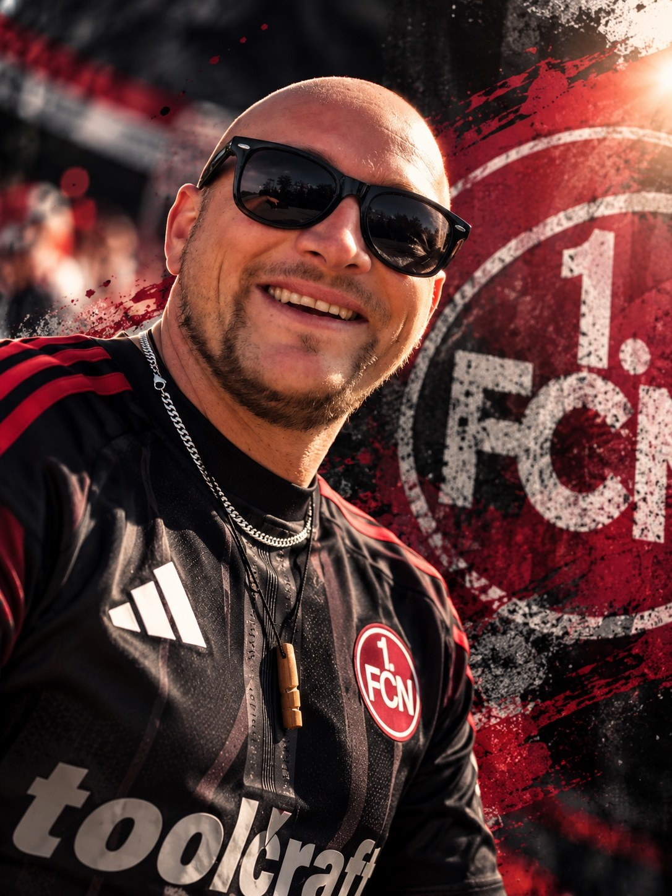

SPIELTAGS-CHECK
Das nächste Spiel
Alles rund um die nächste Begegnung des 1. FC Nürnberg. Die neuesten offiziellen Informationen findest du über die verlinkten Quellen.
Vorschau bei kicker ↗Sein Club. Seine Leidenschaft. Dein Überblick über den nächsten Spieltag.

Spieltermin wird geladen
Robins Tipp für das kommende Spiel
E-Mail-Erinnerung am Vortag des Spiels – nach Einrichtung des Maildienstes.
Alles rund um die nächste Begegnung des 1. FC Nürnberg. Die neuesten offiziellen Informationen findest du über die verlinkten Quellen.
Vorschau bei kicker ↗Neuigkeiten, Verletzungen, Interviews und Spielberichte aus offiziellen und redaktionellen Quellen.
FCN-News öffnen ↗Bestätigte Wechsel und Gerüchte werden getrennt angezeigt. Quelle und Veröffentlichungsdatum stehen bei jedem Eintrag.
Transfermarkt öffnen ↗Quoten erscheinen nur bei vorhandener und zur Veröffentlichung zugelassener Datenquelle. Angaben ohne Gewähr; Quoten können sich ändern. Keine Wettberatung.
Quotenanbieter öffnen ↗